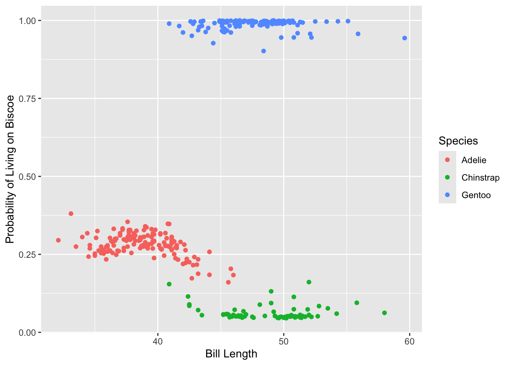
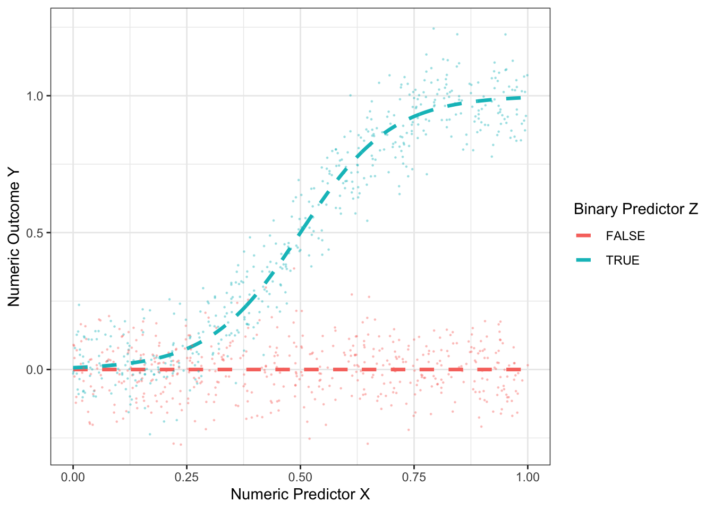
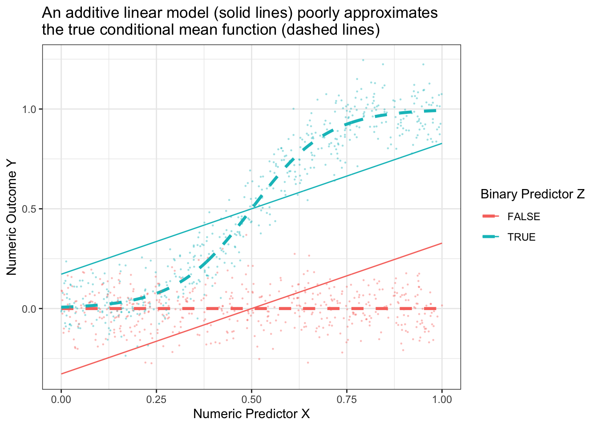
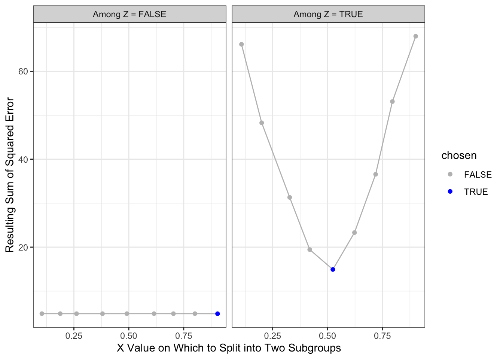
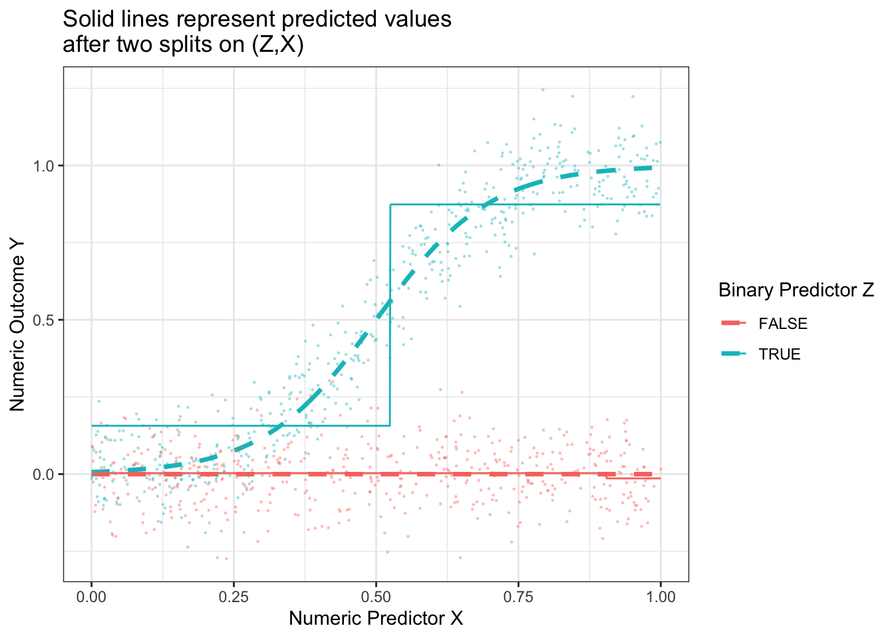
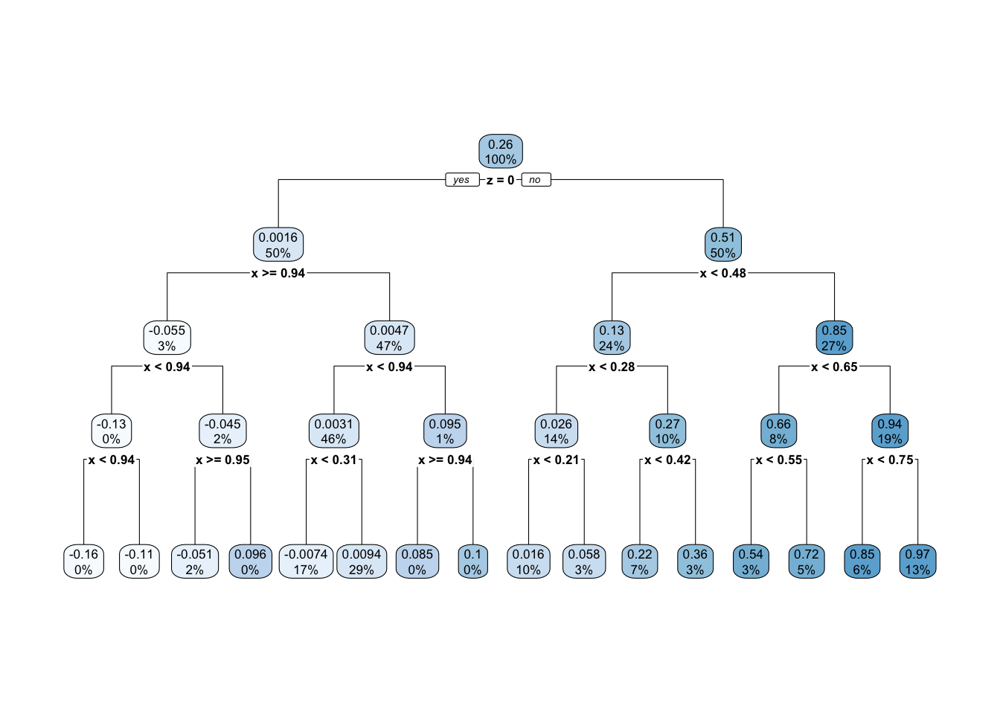
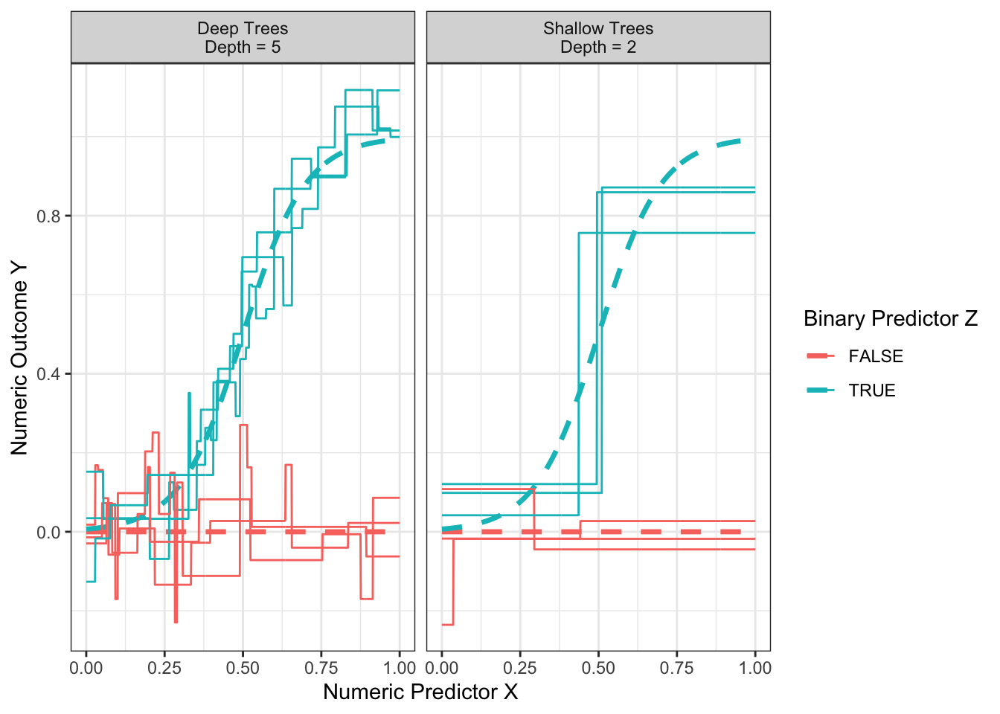
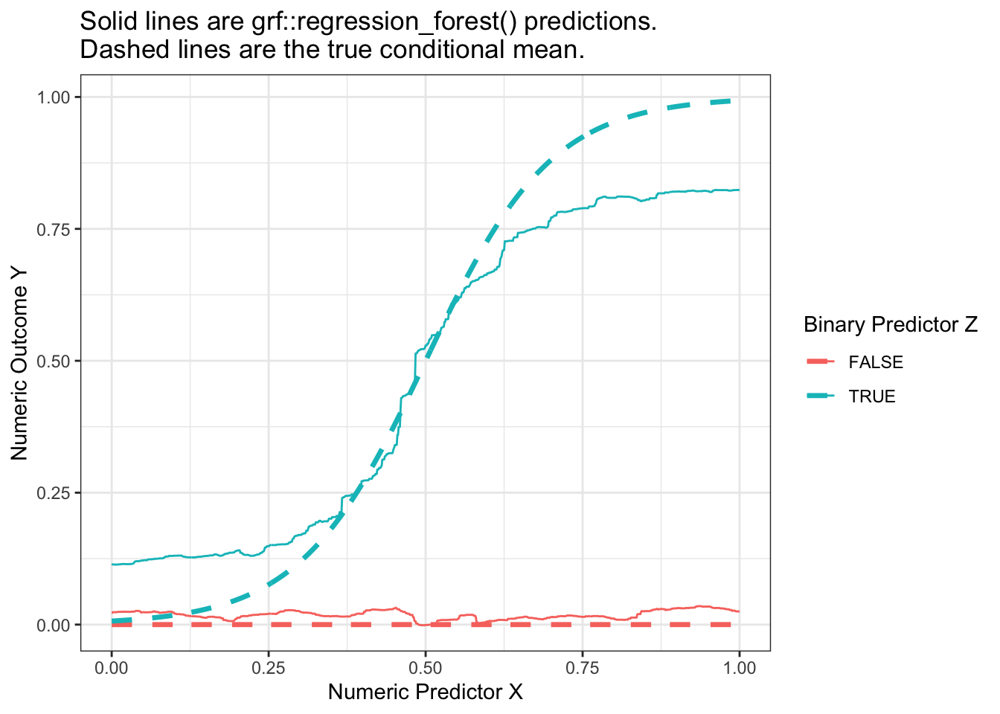

install.packages(c("palmerpenguins","rpart","rpart.plot","grf","DiagrammeR"))Forests
Here are slides.
Regression models perform well when the the response surface \(E(Y\mid\vec{X})\) follows a line (or some other assumed shape). In some settings, however, the response surface may be more complex. There may be nonlinearities and interaction terms that the researcher may not know about in advance. In these settings, one might desire an estimator that adaptively learns the functional form from the data. Trees are one such approach.
Things we will use in class
This is a big topic! This page has lots of material. This section provides the code you can copy to follow along with things we do in class. The later sections are more pedagogical if you are reading the material.
We will use several packages today that you may not have installed. You can install them all with
library(palmerpenguins)
library(rpart)
library(rpart.plot)
library(grf)Here is example code we will use to illustrate learning a tree to whether a penguin is found on the island of Biscoe.
rpart.out <- rpart(island == "Biscoe" ~ ., data = penguins)We will visualize this tree.
rpart.plot(rpart.out)We will estimate a regression forest.
penguins_nonmissing <- penguins |> na.omit()
X <- model.matrix(island == "Biscoe" ~ ., data = penguins_nonmissing)
y <- penguins_nonmissing |>
mutate(biscoe = island == "Biscoe") |>
pull(biscoe)
forest <- grf.out <- regression_forest(
X = X,
Y = y,
tune.parameters = "all"
)We can extract a tree from the forest.
first_tree <- get_tree(forest, index = 1)
plot(first_tree)We can extract predicted values.
yhat <- forest$predictions[,1]We can visualize those predicted values.
penguins_nonmissing |>
mutate(yhat = yhat) |>
ggplot(aes(x = bill_length_mm, y = yhat, color = species)) +
geom_point() +
labs(
y = "Probability of Living on Biscoe",
x = "Bill Length",
color = "Species"
)
A simulation to illustrate trees
From here on, the material is intended to be read rather than walked through together in class.
As an example, the figure below presents some hypothetical data with a binary predictor \(Z\), a numeric predictor \(X\), and a numeric outcome \(Y\).
Code
true_conditional_mean <- tibble(z = F, x = seq(0,1,.001)) |>
bind_rows(tibble(z = T, x = seq(0,1,.001))) |>
mutate(mu = z * plogis(10 * (x - .5)))
simulate <- function(sample_size) {
tibble(z = F, x = seq(0,1,.001)) |>
bind_rows(tibble(z = T, x = seq(0,1,.001))) |>
mutate(mu = z * plogis(10 * (x - .5))) |>
slice_sample(n = sample_size, replace = T) |>
mutate(y = mu + rnorm(n(), sd = .1))
}
simulated_data <- simulate(1000)
p_no_points <- true_conditional_mean |>
ggplot(aes(x = x, color = z, y = mu)) +
geom_line(linetype = "dashed", size = 1.2) +
labs(
x = "Numeric Predictor X",
y = "Numeric Outcome Y",
color = "Binary Predictor Z"
) +
theme_bw()
p <- p_no_points +
geom_point(data = simulated_data, aes(y = y), size = .2, alpha = .3)
p
If we tried to approximate these conditional means with an additive linear model, \[\hat{E}_\text{Linear}(Y\mid X,Z) = \hat\alpha + \hat\beta X + \hat\gamma Z\] then the model approximation error would be very large.
Code
best_linear_fit <- lm(mu ~ x + z, data = true_conditional_mean)
p +
geom_line(
data = true_conditional_mean |>
mutate(mu = predict(best_linear_fit))
) +
theme_bw() +
ggtitle("An additive linear model (solid lines) poorly approximates\nthe true conditional mean function (dashed lines)")
How a tree works
A regression tree begins from a radically different place than regression. Instead of assuming that the response follows some assumed pattern, trees proceed by a much more inductive process: recursive splits.
Trees repeatedly split the data
With no model at all, suppose we were to split the sample into two subgroups. For example, we might choose to split on \(Z\) and say that all units with z = TRUE are one subgroup while all units with z = FALSE are another subgroup. Or we might split on \(X\) and say that all units with x <= .23 are one subgroup and all units with x > .23 are another subgroup. After choosing a way to split the dataset into two subgroups, we would then make a prediction rule: for each unit, predict the mean value of all sampled units who fall in their subgroup. This rule would produce only two predicted values: one prediction per resulting subgroup.
If you were designing an algorithm to predict this way, how would you choose to define the split?
In regression trees to estimate conditional means, the split is often chosen to minimize the resulting sum of squared prediction errors. Suppose we choose this rule. Suppose we consider splitting on \(X\) being above or below each decile of its empirical distribution. Suppose we consider splitting on \(Z\) being FALSE or TRUE. The graph below shows the sum of squared prediction error resulting from each rule.
Code
x_split_candidates <- quantile(simulated_data$x, seq(.1,.9,.1))
z_split_candidates <- .5
by_z <- simulated_data |>
group_by(z) |>
mutate(yhat = mean(y)) |>
ungroup() |>
summarize(sum_squared_error = sum((yhat - y) ^ 2))
by_x <- foreach(x_split = x_split_candidates, .combine = "rbind") %do% {
simulated_data |>
mutate(left = x <= x_split) |>
group_by(left) |>
mutate(yhat = mean(y)) |>
ungroup() |>
summarize(sum_squared_error = sum((yhat - y) ^ 2)) |>
mutate(x_split = x_split)
}
by_x |>
mutate(split = "If Splitting on X") |>
rename(split_value = x_split) |>
bind_rows(
by_z |>
mutate(split = "If Splitting on Z") |>
mutate(split_value = .5)
) |>
ggplot(aes(x = split_value, y = sum_squared_error)) +
geom_point() +
geom_line() +
facet_wrap(~split) +
labs(
x = "Value on Which to Split into Two Subgroups",
y = "Resulting Sum of Squared Error"
) +
theme_bw()
With the results above, we would choose to split on \(Z\), creating a subpopulation with \(Z \leq .5\) and a subgroup with \(Z\geq .5\). Our prediction function would look like this. Our split very well approximates the true conditional mean function when Z = FALSE, but is still a poor approximator when Z = TRUE.
Code
p +
geom_line(
data = simulated_data |>
group_by(z) |>
mutate(mu = mean(y))
) +
ggtitle("Solid lines represent predicted values\nafter one split on Z")
What if we make a second split? A regression tree repeats the process and considers making a further split within each subpopulation. The graph below shows the sum of squared error in the each subpopulation of Z when further split at various candidate values of X.
Code
# Split 2: After splitting by Z, only X remains on which to split
left_side <- simulated_data |> filter(!z)
right_side <- simulated_data |> filter(z)
left_split_candidates <- quantile(left_side$x, seq(.1,.9,.1))
right_split_candidates <- quantile(right_side$x, seq(.1,.9,.1))
left_split_results <- foreach(x_split = left_split_candidates, .combine = "rbind") %do% {
left_side |>
mutate(left = x <= x_split) |>
group_by(z,left) |>
mutate(yhat = mean(y)) |>
ungroup() |>
summarize(sum_squared_error = sum((yhat - y) ^ 2)) |>
mutate(x_split = x_split)
} |>
mutate(chosen = sum_squared_error == min(sum_squared_error))
right_split_results <- foreach(x_split = right_split_candidates, .combine = "rbind") %do% {
right_side |>
mutate(left = x <= x_split) |>
group_by(z,left) |>
mutate(yhat = mean(y)) |>
ungroup() |>
summarize(sum_squared_error = sum((yhat - y) ^ 2)) |>
mutate(x_split = x_split)
} |>
mutate(chosen = sum_squared_error == min(sum_squared_error))
split2_results <- left_split_results |> mutate(split1 = "Among Z = FALSE") |>
bind_rows(right_split_results |> mutate(split1 = "Among Z = TRUE"))
split2_results |>
ggplot(aes(x = x_split, y = sum_squared_error)) +
geom_line(color = 'gray') +
geom_point(aes(color = chosen)) +
scale_color_manual(values = c("gray","blue")) +
facet_wrap(~split1) +
theme_bw() +
labs(
x = "X Value on Which to Split into Two Subgroups",
y = "Resulting Sum of Squared Error"
)
The resulting prediction function is a step function that begins to more closely approximate the truth.
Code
split2_for_graph <- split2_results |>
filter(chosen) |>
mutate(z = as.logical(str_remove(split1,"Among Z = "))) |>
select(z, x_split) |>
right_join(simulated_data, by = join_by(z)) |>
mutate(x_left = x <= x_split) |>
group_by(z, x_left) |>
mutate(yhat = mean(y))
p +
geom_line(
data = split2_for_graph,
aes(y = yhat)
) +
ggtitle("Solid lines represent predicted values\nafter two splits on (Z,X)")
Having made one and then two splits, the figure below shows what happens when each subgroup is the created by 4 sequential splits of the data.
Code
library(rpart)
rpart.out <- rpart(
y ~ x + z, data = simulated_data,
control = rpart.control(minsplit = 2, cp = 0, maxdepth = 4)
)
p +
geom_step(
data = true_conditional_mean |>
mutate(mu_hat = predict(rpart.out, newdata = true_conditional_mean)),
aes(y = mu_hat)
) +
ggtitle("Prediction from regression tree grown to depth 4")
This prediction function is called a regression tree because of how it looks when visualized a different way. One begins with a full sample which then “branches” into a left and right part, which further “branch” off in subsequent splits. The terminal nodes of the tree—subgroups defined by all prior splits—are referred to as “leaves.” Below is the prediction function from above, visualized as a tree. This visualization is made possible with the rpart.plot package which we practice further down the page.
Code
library(rpart.plot)
rpart.plot::rpart.plot(rpart.out)
Your turn: Fit a regression tree
Using the rpart package, fit a regression tree like the one above. First, load the package.
library(rpart)Then use this code to simulate data.
simulate <- function(sample_size) {
tibble(z = F, x = seq(0,1,.001)) |>
bind_rows(tibble(z = T, x = seq(0,1,.001))) |>
mutate(mu = z * plogis(10 * (x - .5))) |>
slice_sample(n = sample_size, replace = T) |>
mutate(y = mu + rnorm(n(), sd = .1))
}
simulated_data <- simulate(1000)Use the rpart function to grow a tree.
rpart.out <- rpart(y ~ x + z, data = simulated_data)Finally, we can define a series of predictor values at which to make predictions,
to_predict <- tibble(z = F, x = seq(0,1,.001)) |>
bind_rows(tibble(z = T, x = seq(0,1,.001)))and then make predictions
predicted <- predict(rpart.out, newdata = to_predict)and visualize in a plot.
to_predict |>
mutate(yhat = predicted) |>
ggplot(aes(x = x, y = yhat, color = z)) +
geom_step()
When you succeed, there are a few things you can try:
- Visualize the tree using the
rpart.plot()function applied to yourrpart.outobject - Attempt a regression tree using the
baseball_population.csvdata - Try different specifications of the tuning parameters. See the
controlargument ofrpart, explained at?rpart.control. To produce a model with depth 4, we previously used the argumentcontrol = rpart.control(minsplit = 2, cp = 0, maxdepth = 4).
Tuning parameter: Depth
How deep should one make a tree? Recall that the depth of the tree is the number of sequential splits that define a leaf. The figure below shows relatively shallow trees (depth = 2) and relatively deep trees (depth = 4) learned over repeated samples. What do you notice about performance with each choice?
Code
estimator <- function(maxdepth) {
foreach(rep = 1:3, .combine = "rbind") %do% {
this_sample <- simulate(100)
rpart.out <- rpart(y ~ x + z, data = this_sample, control = rpart.control(minsplit = 2, cp = 0, maxdepth = maxdepth))
true_conditional_mean |>
mutate(yhat = predict(rpart.out, newdata = true_conditional_mean),
maxdepth = maxdepth,
rep = rep)
}
}
results <- foreach(maxdepth_value = c(2,5), .combine = "rbind") %do% estimator(maxdepth = maxdepth_value)
p_no_points +
geom_line(
data = results |> mutate(maxdepth = case_when(maxdepth == 2 ~ "Shallow Trees\nDepth = 2", maxdepth == 5 ~ "Deep Trees\nDepth = 5")),
aes(group = interaction(z,rep), y = yhat)
) +
facet_wrap(
~maxdepth
)
Shallow trees yield predictions that tend to be more biased because the terminal nodes are large. At the far right when z = TRUE and x is large, the predictions from the shallow trees are systematically lower than the true conditional mean.
Deep trees yield predictions that tend to be high variance because the terminal nodes are small. While the flexibility of deep trees yields predictions that are less biased, the high variance can make deep trees poor predictors.
The balance between shallow and deep trees can be chosen by various rules of thumb or out-of-sample performance metrics, many of which are built into functions like rpart. Another way out is to move beyond trees to forests, which involve a simple extension that yields substantial improvements in performance.
What to read
To read more on trees, see Ch 8.4 of Efron & Hastie (2016).
Forests
We saw previously that a deep tree is a highly flexible learner, but one that may have poor predictive performance due to its high sampling variance. Random forests (Breiman 2001) resolve this problem in a simple but powerful way: reduce the variance by averaging the predictions from many trees. The forest is the average of the trees.
If one simply estimated a regression tree many times on the same data, every tree would be the same. Instead, each time a random forest grows a tree it proceeds by:
- bootstrap a sample \(n\) of the \(n\) observations chosen with replacement
- randomly sample some number \(m\) of the variables to consider for splitting
There is an art to selection of the tuning parameter \(m\), as well as the parameters of the tree-growing algorithm. But most packages can select these tuning parameters automatically. The more trees you grow, the less the forest-based predictions will be sensitive to the stochastic variability that comes from the random sampling of data for each tree.
Illustration with bagged forest
To illustrate, we generate data by the same process as on the trees page.
Code
true_conditional_mean <- tibble(z = F, x = seq(0,1,.001)) |>
bind_rows(tibble(z = T, x = seq(0,1,.001))) |>
mutate(mu = z * plogis(10 * (x - .5)))
simulate <- function(sample_size) {
tibble(z = F, x = seq(0,1,.001)) |>
bind_rows(tibble(z = T, x = seq(0,1,.001))) |>
mutate(mu = z * plogis(10 * (x - .5))) |>
slice_sample(n = sample_size, replace = T) |>
mutate(y = mu + rnorm(n(), sd = .1))
}
simulated_data <- simulate(1000)For illustration, we will first consider a simple version of random forest that is a bagging estimator: all predictors are included in every tree and variance is created through bagging, or bootstrap aggregating. The code below builds intuition, and the code later using the regression_forest function from the grf package is one way we would actually recommend learning a forest in practice.
tree_estimates <- foreach(tree_index = 1:100, .combine = "rbind") %do% {
# Draw a bootstrap sample of the data
simulated_data_star <- simulated_data |>
slice_sample(prop = 1, replace = T)
# Learn the tree
rpart.out <- rpart(
y ~ x + z, data = simulated_data_star,
# Set tuning parameters to grow a deep tree
control = rpart.control(minsplit = 2, cp = 0, maxdepth = 4)
)
# Define data to predict
to_predict <- tibble(z = F, x = seq(0,1,.001)) |>
bind_rows(tibble(z = T, x = seq(0,1,.001)))
# Make predictions
predicted <- to_predict |>
mutate(
yhat = predict(rpart.out, newdata = to_predict),
tree_index = tree_index
)
return(predicted)
}We can then aggregate the tree estimates into a forest prediction by averaging over trees.
forest_estimate <- tree_estimates |>
group_by(z,x) |>
summarize(yhat = mean(yhat), .groups = "drop")The forest is very good at approximating the true conditional mean.
Code
p_no_points <- true_conditional_mean |>
ggplot(aes(x = x, color = z, y = mu)) +
geom_line(linetype = "dashed", size = 1.2) +
labs(
x = "Numeric Predictor X",
y = "Numeric Outcome Y",
color = "Binary Predictor Z"
) +
theme_bw()
p_no_points +
geom_line(
data = forest_estimate,
aes(y = yhat)
) +
ggtitle("Solid lines are forest predictions.\nDashed lines are the true conditional mean.")
Your turn: A random forest with grf
In practice, it is helpful to work with a function that can choose the tuning parameters of the forest for you. One such function is the regression_forest() function in the grf package.
library(grf)To illustrate its use, we first produce a matrix X of predictors and a vector Y of outcome values.
X <- model.matrix(~ x + z, data = simulated_data)
Y <- simulated_data |> pull(y)We then estimate the forest with the regression_forest() function, here using the tune.parameters = "all" argument to allow automated tuning of all parameters.
forest <- regression_forest(
X = X, Y = Y, tune.parameters = "all"
)We can extract one tree from the forest with the get_tree() function and then visualize with the plot() function.
first_tree <- get_tree(forest, index = 1)
plot(first_tree)To predict in a new dataset requires a new X matrix,
to_predict <- tibble(z = F, x = seq(0,1,.001)) |>
bind_rows(tibble(z = T, x = seq(0,1,.001)))
X_to_predict <- model.matrix(~ x + z, data = to_predict)which can then be used to make predictions.
forest_predicted <- to_predict |>
mutate(
yhat = predict(forest, newdata = X_to_predict) |>
pull(predictions)
)When we visualize, we see that the forest from the package is also a good approximator of the conditional mean function. It is possible that the bias of this estimated forest arises from tuning parameters that did not grow sufficiently deep trees.
Code
p_no_points +
geom_line(
data = forest_predicted,
aes(y = yhat)
) +
ggtitle("Solid lines are grf::regression_forest() predictions.\nDashed lines are the true conditional mean.")
Once you have learned a forest yourself, you might try a regression forest using the baseball_population.csv data or another dataset of your choosing.
Forests as adaptive nearest neighbors
A regression tree can be interpreted as an adaptive nearest-neighbor estimator: the prediction at predictor value \(\vec{x}\) is the average outcome of all its neighbors, where neighbors are defined as all sampled data points that fall in the same leaf as \(\vec{x}\). The estimator is adaptive because the definition of the neighborhood around \(\vec{x}\) was learned from the data.
Random forests can likewise be interpreted as weighted adaptive nearest-neighbor estimators. For each unit \(i\), the predicted value is the average outcome of all other units where each unit \(j\) is weighted by the frequency with which it falls in the same leaf as unit \(i\). Seeing forest-based predictions as a weighted average of other units’ outcomes is a powerful perspective that has led to new advances in forests for uses that go beyond standard regression (Athey, Tibshirani, & Wager 2019).
Forests for causal inference
TBD
What to read
To read more on trees, see Ch 17 of Efron & Hastie (2016).